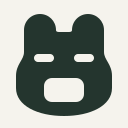
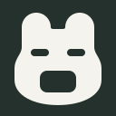
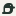

A
格伴
陪伴 · 负形 · 柔和
浅色

深色

安静的小伙伴
宽脸、低耳和放松的眼睛，让工具箱有个安静的性格。腹部留出一格，装下一件随手可用的小工具。
小尺寸 原生像素 / 1:1
浅色32px 16px
深色32px 16px
性格最强；耳形仍可继续收敛。
从一个有性格的伙伴，到一个清楚的收纳动作。
四个方向，先比较轮廓、负形和小尺寸识别，
再决定哪一个值得继续长成 Cubbix。
陪伴 · 负形 · 柔和


宽脸、低耳和放松的眼睛，让工具箱有个安静的性格。腹部留出一格，装下一件随手可用的小工具。
性格最强；耳形仍可继续收敛。
模块 · 取用 · 秩序
三个格子组成稳定的柜体，右上一个工具块脱离排列。用取用动作表达 cubby + x，而不是把功能拼成图标。
语义最直接；需继续拉开与通用网格的距离。
收纳 · 留白 · 承接
一个独立工具块，由开阔的托盘稳稳承接。留出充分空白，让“收好、随时取用”的动作比字母更先被看见。
结构最简；可能联想到托盘或电源符号。
栖息 · 方格 · 轻巧
一只收翅停驻的小鸟，翅下藏着方格。圆钝的喙、低重心与短尾，让它像一个一直在场、却不打扰的菜单栏伙伴。

优先推荐；1× 鸟眼已对齐像素中心。
它把“安静常驻”与“一格收纳”放在同一个轮廓里。侧身、短尾与圆喙提供独立于字母的记忆点，翅下方格又能回到产品含义。下一轮重点是鸟眼的形状、喙的长度和视觉重心；如更偏好直接的工具箱语义，可继续 B / 抽格。